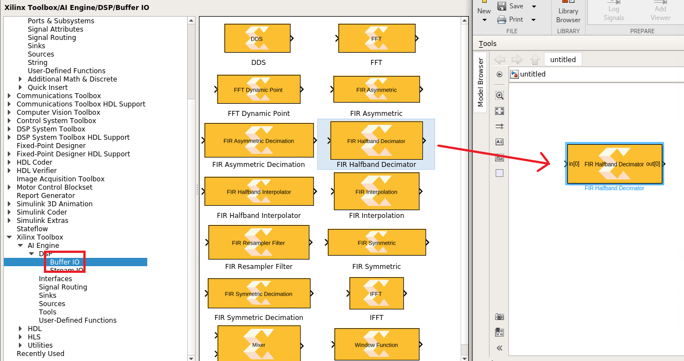
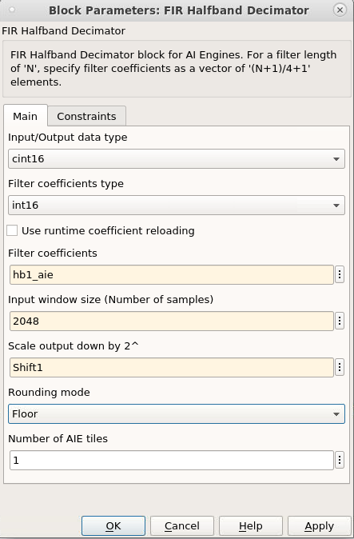
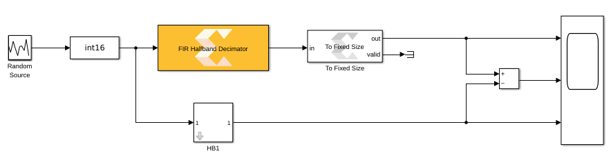
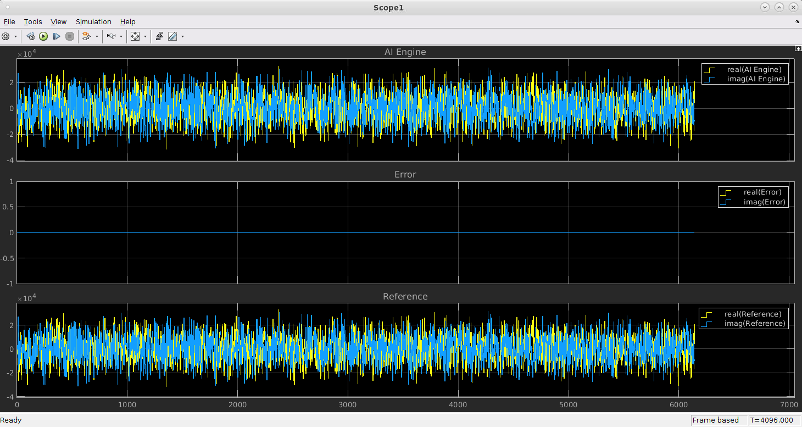
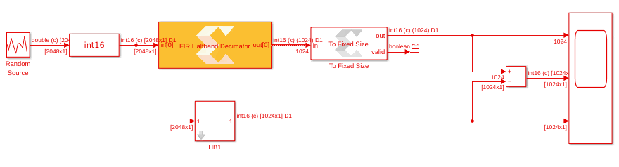
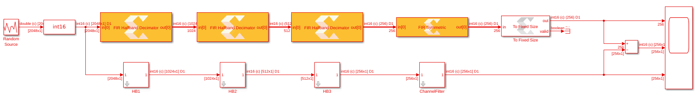
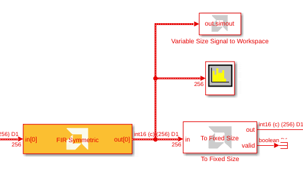

AI Engine DevelopmentSee Vitis™ Development Environment on xilinx.com See Vitis™ AI Development Environment on xilinx.com |
In this lab, you will begin building the decimation chain design using AI Engine DSP library functions. You will also see how to use Vitis Model Composer to inspect the functional performance of the design.
:warning: This AI Engine Lab can be done only in a Linux environment.
This lab has the following steps:
In this step, you will create a simple testbench for a block from the AI Engine DSP Library.
Run the setupLab2 script to initialize a working directory and preload the DSP filter configurations.
On the MATLAB GUI, select the Home Tab and click Simulink.


Perform the next step to automatically call the filter configuration script when opening the design or when you update it.
CreateFilter; in the edit window on the right.CreateFilter; in the edit window on the right.
Save the model CTRL+S and assign the name VMC_DecimationChain.

Find the AMD Toolbox, which contains three sub-libraries:
Click the AI Engine section. This reveals the following sub-sections:

Double-click the AIE FIR Halfband Decimator block to open the GUI. Populate the GUI with the following parameters :
Click Apply and OK.

Now create a data source to feed this filter.
| Name to Type | Block Name to Select | Parameters |
|---|---|---|
| random | Random Source | Source Type: Uniform Minimum: -30000 Maximum: 30000 Sample time: 1 Samples per frame: 2048 Complexity: complex |
| cast | Cast | Output data type: int16 |
Cascade the three blocks: Random Source, Cast, AIE FIR Filter.
The file ReferenceChain.slx contains the decimation chain using Simulink blocks. Open the file ReferenceChain.slx. Copy the block HB1 over to your design.
Copy the small set of blocks (To Fixed Size, Subtract, Scope) to create the following design:

In the Simulink toolstrip, set the Stop Time to 5000 and click Run to simulate the design. The FIR filter is compiled and the design is run.
Double-click the Scope block to view the simulation results. The Error scope should show a completely null difference.

After updating the design with CTRL-D, the display should look as follows:

Notice that before implementing the Decimation Filter the vector length was 2048, but after implementation this was reduced to 1024. This corresponds to decimation by a factor of 2.
| Parameter | HB1 | HB2 | HB3 | Channel Filter |
|---|---|---|---|---|
| Filter Block | FIR Halfband Decimator | FIR Halfband Decimator | FIR Halfband Decimator | FIR Symmetric Filter |
| Input Output data type | cint16 | cint16 | cint16 | cint16 |
| Filter Coefficients Data Type | int16 | int16 | int16 | int16 |
| Filter Coefficients | hb1_aie | hb2_aie | hb3_aie | cfi_aie |
| Filter Length | N/A | N/A | N/A | length(cfi) |
| Input window size (Number of samples) | 2048 | 1024 | 512 | 256 |
| Scale output down by 2^ | Shift1 | Shift2 | Shift3 | ShiftCF |
| Rounding mode floor | floor | floor | floor | floor |
256. The design should look like as follows:
When creating a DSP design, one of the most important parameters to consider is the spectrum. In Simulink, the spectrum can be displayed using a spectrum scope.
spectrum.
Run the simulation. The spectrum scope should display similar to the following:

You can easily place a spectrum scope anywhere within the model to study the signal at different stages of the design. Furthermore, Simulink has a lot of specific blocksets that can be used to generate test vectors, create a reference model, and compare the signals at any point in the design.
You can also export any signal to the MATLAB workspace for more complex analysis:
variable size.
plot(abs(out.simout)) This plots the magnitude of the complex-valued AI Engine output.The signal should display similar to the following. You can now work with the simulation output just like any other variable in the MATLAB workspace.

Why use Variable Size Signal to Workspace instead of To Workspace?
AI Engine kernels can consume or produce different numbers of data samples (or no data samples at all) each time they are invoked. To model this behavior in Simulink, Vitis Model Composer uses variable-sized signals, which are denoted by the thick dashed line between the AI Engine blocks. In this model, there is a To Fixed Size block that converts the variable-sized signal to a fixed-size signal with a valid signal that indicates when data is actually present. Variable Size Signal to Workspace is a convenience block that behaves similarly to To Workspace, but it automatically discards empty samples in the variable-sized signal and concatenates the valid samples into a single MATLAB vector.
For more details, refer to Variable-Sized Signals in the Vitis Model Composer documentation.
AI Engine simulations within Simulink are bit-exact but do not provide timing information for the design as it will run on the hardware. In later labs, we will see how to invoke the cycle-approximate AIE Simulator and view timing analysis results from within Vitis Model Composer.
Congratulations! This concludes Lab 2. In this lab, you built a model of the decimation chain using blocks from the AI Engine DSP Library. You also used Simulink scopes to compare the AI Engine implementation of the design against a golden reference.
In the next lab, you will see how to bring in custom AI Engine kernel or graph code and simulate it with Vitis Model Composer.
© Copyright 2023 Advanced Micro Devices, Inc.
Licensed under the Apache License, Version 2.0 (the "License");
you may not use this file except in compliance with the License.
You may obtain a copy of the License at
http://www.apache.org/licenses/LICENSE-2.0
Unless required by applicable law or agreed to in writing, software
distributed under the License is distributed on an "AS IS" BASIS,
WITHOUT WARRANTIES OR CONDITIONS OF ANY KIND, either express or implied.
See the License for the specific language governing permissions and
limitations under the License.
XD058 | © Copyright 2023 Advanced Micro Devices, Inc.